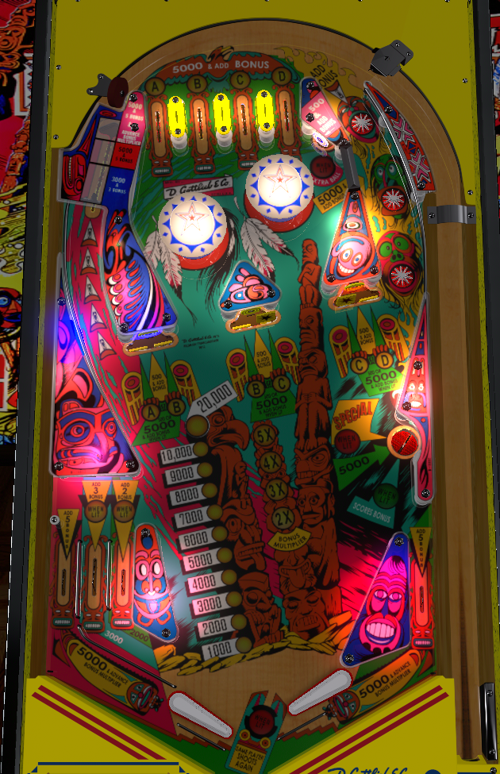

Collect base bonus and multipliers: there are many ways to do both, but the orbit shots are safest. Light A-B-C-D letters at the top lanes to increase the value of the drop targets. Once base bonus is maxed out at 20,000 points, the right saucer will be lit to collect the bonus so you can start again. Don't be fooled by the flippers, who are both off-center horizontally and not level vertically (the right one is higher).
Lit top lanes score 5,000 points, collecting the lit letter and unlighting that lane. Unlit top lanes score 500 points. On a 3-ball game, the A and D are tied together, so that collecting either one gives credit for both.
The six drop targets on the table are labelled A-B, B-C, and C-D. Collecting a letter lights the drop targets with the corresponding letter. Unlit drop targets score 500 points and a bonus advance. Lit drop targets score 5,000 points and a bonus advance. Clearing all 6 drop targets increases the bonus multiplier. A bonus multiplier is also awarded for collecting either B or C, then hitting both drop targets of the collected letter.
Collecting all four of A-B-C-D *or* clearing all 6 drop targets lights the standup target near the bumpers for an extra ball. (The extra ball target scores 500 points and a bonus advance when the extra ball is not lit.) Doing both lights the lower right saucer for a special.
Shooting at the drop targets should be done with caution. They are intentionally angled to prompt in the center or right out lanes.
Score 1,000 points in a 3-ball game or 100 points in a 5-ball game.
To the right of the right pop bumper is a one way gate which directs the ball to come down the right orbit. Triggering this gate scores 5,000 points and a bonus advance.
Each star rollover in the right orbit scores 1,000 points and a bonus advance.
The vary-target can be pushed in to three different levels, giving three different rewards. A soft shot scores 3,000 points and 3 bonus advance. A medium shot scores 5,000 points and 5 bonus advance. A full shot scores 5,000 points, 5 bonus advance, and a bonus multiplier.
Scores 5,000 points. If A-B-C-D and the six drop targets have all been completed, this saucer scores a Special. If the base bonus is currently maxed out at 20,000 points, this saucer is lit for bonus collect. The bonus collect is a full collect including multiplier, which resets the base bonus but keeps multipliers intact.
There are two in lanes on the left, and none on the right. The flippers are placed further right than horizontal center, and the right flipper is positioned slightly higher up on the table than the left. Both out lanes score 5,000 points, 5 bonus advance, and a bonus multiplier advance. The near left in lane scores 2,000 points, as well as 2 bonus advances if the C is collected. The far left in lane scores 3,000 points, as well as 3 bonus advances if the B is collected.